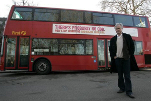

Antes del Internet mi ateísmo era tímido y solitario. Habitaba en mi cerebro como reo acusado erróneamente, esperando que alguien se animara a acompañarlo, a inyectarle confianza y restarle el mítico temor a mis herejías. El mutismo y la ausencia de ritos religiosos parecían la única expresión que sentía permisible y no reunía los motivos ni la fuerza suficientes para extraer mis pensamientos de aquella gaveta impía donde llevaban años madurando. Iba a ser imposible mantenerlos recluidos, mi danza herética adquiría ímpetu y, para esos años, empezaba a fermentar una insospechada revolución tecnológica que le sumaría ‘momento’.

Esta nueva zona virtual parió foros ateos donde localicé abogados para el inocente reo en mi cerebro. Las discusiones allí hicieron posible una alianza; ya no estaba ni tan sola ni tan callada. Además, la unión en grandes cantidades nos permite ser selectivos ya que, como en todo, existen innumerables tipos de no creyentes. En mi país, los ateos que conocí en mi juventud tenían vínculos estrechos con el comunismo, algo que ha ido cambiando con los años. Pero la fórmula de la imposición nunca ha funcionado, lo han estado haciendo con los ateos y, aún imponiéndonos credos desde que nacemos, millones nos desprendemos de ellos tan pronto podemos darle rienda suelta a nuestra razón. Por ello, la idea de “asignar” el ateísmo, mucho menos dentro de un entorno político, me parece ridículamente absurda; además, sería imitar uno de los peores elementos de las religiones: a cada bebé se le designa un credo desde que nace.
Mi ateísmo en particular viene del materialismo científico. La ciencia explica los mecanismos que forman el mundo en términos que puedo asimilar sin problemas logísticos; la tecnología, por su parte, permite ahora la unión con otros cerebros de similares ideas y, como bien saben las religiones, en la unión existe una fuerza que transforma, que alienta y provee confianza al grupo como entidad. Sin embargo, es precisamente cuando hemos alcanzado el punto de cambiar algo cuando debemos de hacerlo con sensatez ya que las transformaciones no siempre son positivas.
Pero si algo me han enseñado las ciencias del genoma, el cerebro y la conducta es que los seres humanos nunca vamos a estar totalmente de acuerdo. Además del obstáculo numérico principal: más de seis mil millones de cabezas distintas, la lucha por la supervivencia en un mundo de sociedades desequilibradas ha producido un caos de proporciones desastrosas a nivel hasta planetario. La fuerza de la unión puede patearnos con intensidad torturante si no la usamos con responsabilidad solidaria, permitiendo el trabajo en conjunto con los que no piensan como tú.
En este sentido, el Internet es un espejo donde nos observamos conjugados los ateos, el reflejo confirma que el hecho de no ser creyentes no es suficiente, igual nos peleamos entre nosotros, igual formamos pequeños subconjuntos donde nos diferenciamos porque ‘lo-mío-es-la-libertad-y-lo-tuyo-es-la-imposición’, y así nos movemos en una marea que evita patrones y nos divide, costándole la vida a más de un foro; estos hechos sugieren que quizá somos hasta peores en esto de la asociación debido a la desconfianza que sentimos hacia todo lo que huela a congregación.
Añádele a esta fórmula el elemento creyente. Y no cualquier creyente porque vienen en sus especificados y esenciales paquetes; están esos familiares que adoras, los amigos imprescindibles, los jefes con sus propios adjetivos, los colegas y sus juicios y la sociedad donde los dioses gobiernan hasta en las cortes de justicia, un hecho que nos indica que aún en la supuesta ceguera de la ley los humanos nunca dejamos de ver lo que nuestros cerebros se han acostumbrado a desear.
Hoy estamos en Facebook y en Twitter. Las redes sociales traen con ellas otro elemento interesante: la interacción entre todos estos paquetes. De repente nos encontramos con una lista de conocidos que incluye todo tipo de historias. De hecho, cualquier colección de amistades en una cuenta inespecífica es un baúl repleto de relatos donde los famosos seis grados de separación adquieren un nivel futurista inimaginable hace veinte años. Hoy lo vivimos, analizamos y disfrutamos con una franqueza todavía temerosa de su propias iniciativas. Y los encontronazos me hacen reflexionar.
El ateísmo es cada vez más vocal, más visible. Está cobrando vida social y ya tiene sus voceros en el mundo. Impulsados por la ciencia y en defensa, principal y tristemente (porque no debería haber razón alguna para defenderla), de la Teoría de la Evolución, muchas de estas voces ateas han tomado esta bandera para impulsar la ideología; otras sancionan las religiones (no a todos los religiosos, valga la aclaración) por las atrocidades que todavía permiten y propician y, por supuesto, por la discriminación que propagan populares libros sagrados, promulgando la inferioridad entre razas, géneros y preferencias sexuales. Otros humanistas se han centrado en la obtención de un mundo laico donde todos seamos juzgados bajo una ley secular que no te procese de acuerdo a si tus ideas van o no en acorde con “la religión del estado”, una frase que no debería existir en la realidad. A todos por igual, creyentes y no creyentes, nos conviene que sea así. Más importante aún, es la única forma de gobierno justa. Hoy observo que la distribución de estas ideas por las redes sociales permite que nos acostumbremos más a la belleza del secularismo, que no se traduce en eliminar religiones sino en impedir que ninguna tenga el poder de juzgarnos a todos.
Estos consonantes ateos se mueven en los “muros” sociales del nuevo mundo digital y es en esa intersección donde nuestras ideas se ven expuestas ante todos los que hemos aceptado en nuestras cuentas. Y sí, es un reto insólito que pone a prueba nuestra tolerancia, el nivel de apertura que le hemos otorgado a esa gaveta impía y hasta el amor y el aprecio que le tenemos a los demás sin importar cuáles sean sus creencias. También descubre qué tanto estamos dispuestos a exponer y a defender esas nociones tantas veces polémicas que guían nuestra existencia.

Las nuevas conferencias sociales frente a cientos, a veces miles, de espectadores cibernéticos, ofrecen un nuevo espacio para desacostumbrados debates, así, exponemos información a personas cercanas que de ninguna otra forma hubiesen conocido esa parte sobre nosotros. Es un mundo distinto al de los foros y los blogs por la característica social que integra y la cantidad asombrosa de personajes del pasado y presente de cualquier individuo que permite recoger. Un cambio tan novedoso como significativo cuyos resultados dependerán del uso que le dé cada cual. Como mujer atea en su cuarta década de vida, crecí sin imaginar el Internet, hoy no quisiera tener que vivir desconectada y me parece que su uso en la expansión del pensamiento crítico y el conocimiento científico continuará disminuyendo el aislamiento que hemos sentido siempre los ateos; poseer un medio donde comunicarlo y donde también es posible encontrar neuronas solidarias es un regalo de la capacidad del cerebro humano. Saberlo y apreciarlo como el resultado de un proceso evolutivo que ha tomado millones de años lo enaltece aún más ante mis ojos, lo hace mucho más extraordinario y relevante.
Por otro lado, y no menos significativo, estas herramientas permiten que los demás comprendan, mediante la interacción con ateos vocales, que el ateísmo no es una amenaza, no estamos aquí para despojar a los creyentes de sus espacios sino para crear uno nuestro; un espacio propio que ofrezca la alternativa de no creer a quien lo desee y hacerlo quizá, si nuestros propios egos nos lo permiten, tan visible y ruidoso como ha sido el de ellos…por los siglos de los siglos…
Normas religiosas bajo resonancia magnética
¿Cuándo observarán a los cerebros ateos?
Recientemente publiqué un artículo sobre un experimento acerca de conductas religiosas. Un equipo internacional de investigadores encuestó a distintos grupos de individuos (dentro de Estados Unidos) y realizó un experimento que incluía la resonancia magnética funcional para observar cerebros creyentes mientras pensaban en Dios (la famosa fMRI que ya no tengo que explicar pues protagoniza casi todas las historias en hospitales ficticios de la televisión).
Obviamente, esto no quiere decir que los investigadores han demostrado que Dios no existe (ahórrense los correos), lo que sí nos dice, confirmando estudios anteriores, es que el cerebro acomoda la forma en que interpretamos nuestras experiencias para que nos sintamos bien. Me explico. Las encuestas indagaban tres elementos: qué tan alto pensaban los encuestados era su nivel de creencia, cómo concebían las creencias de los demás, tanto de personas famosas como Bill Gates hasta las del vecino y, por último, qué pensaban ellos opinaba Dios.
Varias exploraciones fueron realizadas, en Boston, Chicago y en la red. Luego, el experimento con la resonancia permitía a los investigadores observar cuáles regiones neuronales se activaban cuando los participantes trabajaban con estos tres elementos. Para el primero (sus propias creencias), se les asignaban preguntas donde tenían que tomar decisiones morales; para el segundo (las creencias de los demás), debían inferir cómo creen responderían otros personajes; finalmente (la creencia de Dios), debían responder a dilemas morales de acuerdo con lo que ellos pensaban eran los designios del Señor. La primera y la tercera, encontraron, comparten regiones de actividad cerebral.
Los resultados sugieren que los creyentes adaptan los pensamientos de Dios a sus propias creencias, muestran egocentrismo respecto a su fe en particular y, al final, Dios tiende a estar de acuerdo con sus decisiones morales. Lo que explica por qué tantos religiosos justifican crímenes y las más horrendas discriminaciones con la palabra de sus dioses (tampoco ayuda que hayan dioses tan violentos y prejuiciosos). En conclusión, cuando la gente piensa en su Dios, piensa en sí mismo.

Muy curioso; yo por mi parte nunca pude identificarme con la divinidad que me asignaron, no me sentía una con Dios, el concepto era demasiado ajeno como para activar las mismas regiones donde los pensamientos más íntimos sobre mi ideología existencial se originaban. Por eso me gustaría que se estudiara el cerebro ateo en este contexto. Es probable que guardemos un compartimiento distinto para la divinidad, a pesar de que es un meme ficticio comparable con cualquier otro en esa condición, Dios es demasiado importante para una inmensa mayoría de la humanidad y tenemos que vivir dentro del grupo; sería interesante saber qué se activa cuando un ateo ex católico, por ejemplo, piensa en el Dios de los cristianos, cuando piensa en Shivá o en Papá Pitufo.
La pregunta: ¿qué cree usted haría Dios en el siguiente dilema moral? es irrelevante en las decisiones del ateo, su juicio no se rige por normas morales promulgadas en libros sagrados sino por el sentido puro de la ética que ha evolucionado de la empatía y de la necesidad de vivir en grupos sociales, entre otros elementos. De hecho, la base de todos estos escritos para creyentes es, precisamente, esta ética, pero vive oculta en varias capas de envolturas con etiquetas tan absurdas y arbitrarias que muchas de ellas son desdeñadas hasta por los mismos creyentes que las perciben como residuos inexorables de estos escritos antiguos.
Para el ateo, cualquier dios o monstruo es inexistente y en ese sentido ninguno dirigirá sus neuronas para pautar sus decisiones. Considerará elemental a la divinidad que esté aliada con su gobierno pues indica que las leyes se basarán en ese pensamiento sobrenatural en específico. Shivá sería más relevante en mi cerebro si yo viviera en Allahabad. Un relativismo que me hizo recordar a un brujo que siempre se quejaba del desdén que muestran muchos religiosos hacia sus creencias.
“Me tratan como si fuera un loco, un satánico”, me decía, “sólo porque creo en más espíritus que ellos. No sabía que la seriedad de la fe tenía que ver con eso, con un número”.
Volver al índice de la Lupa Herética
© 2008-2021 Glenys Álvarez y Sin Dioses. Prohibida la reproducción con fines comerciales.
Comentarios
Comments powered by Disqus